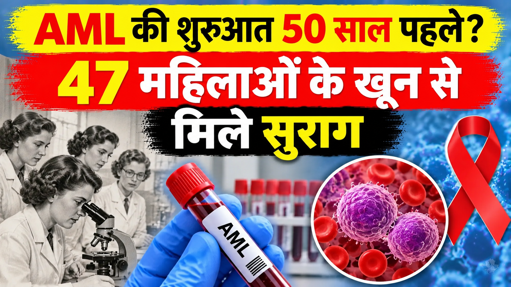
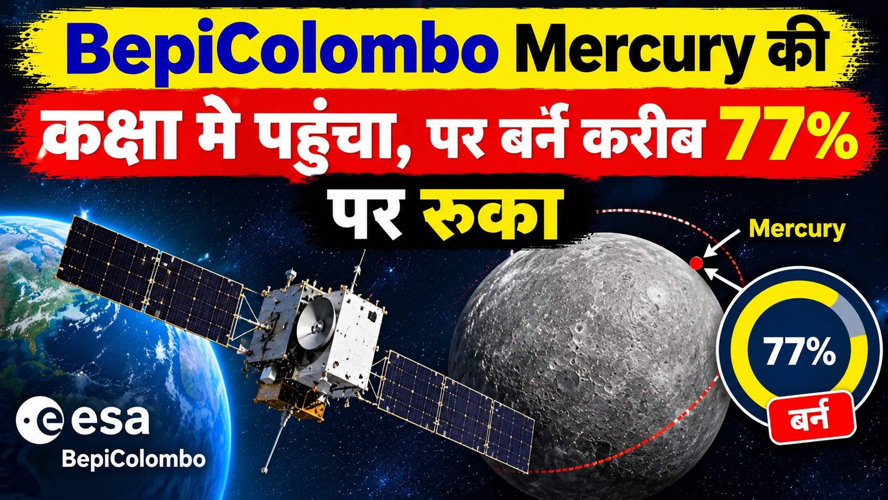
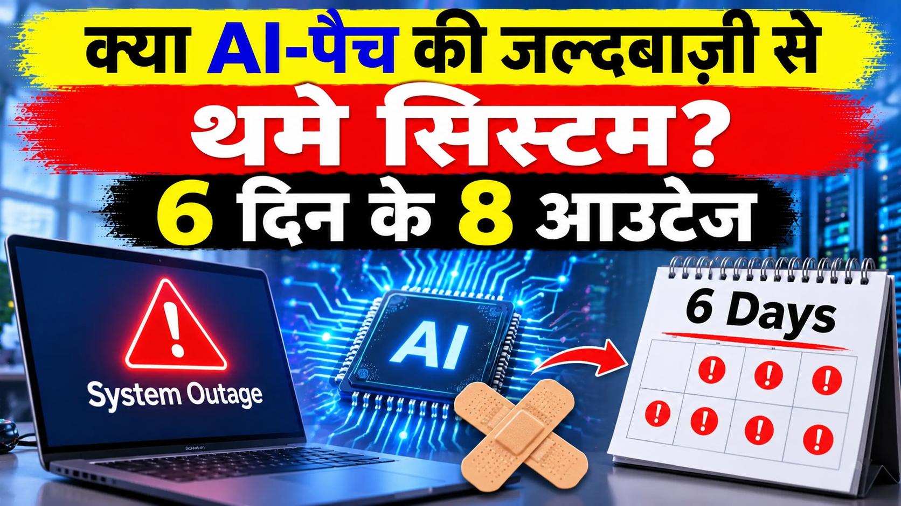
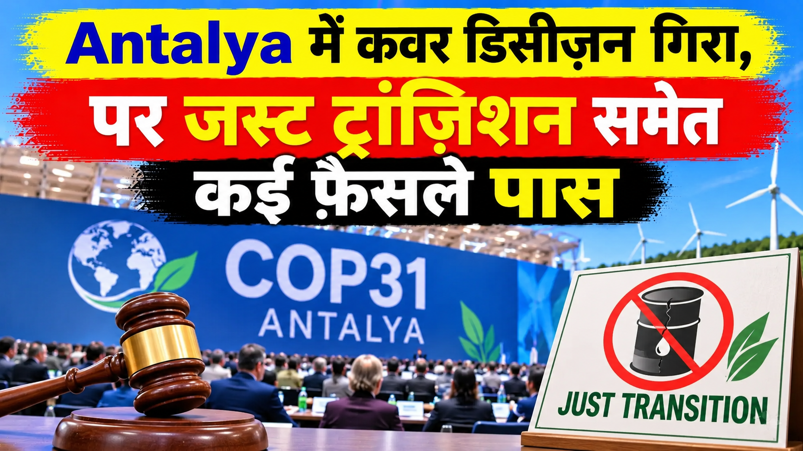
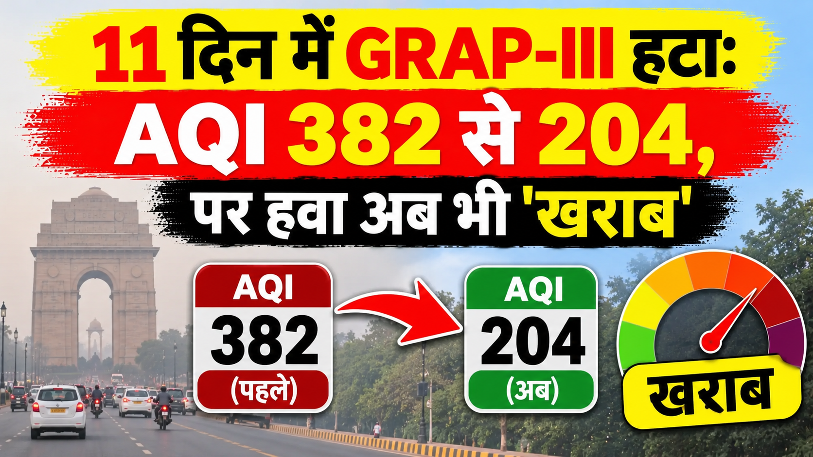
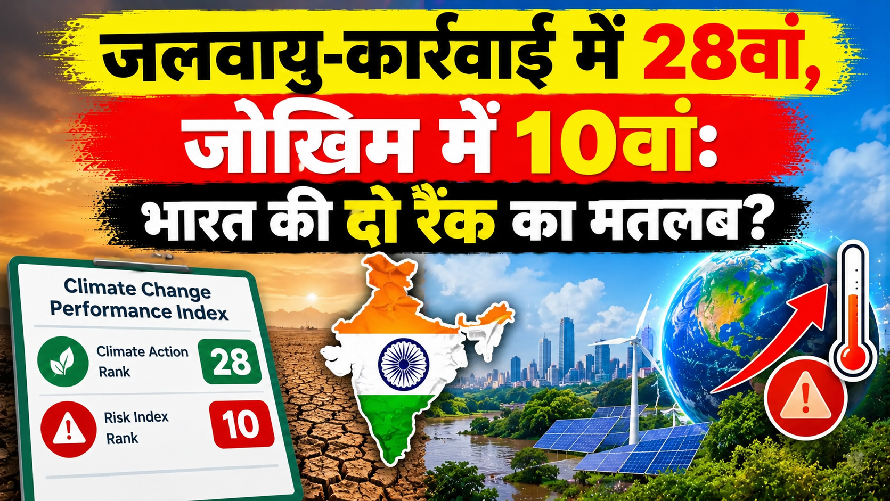
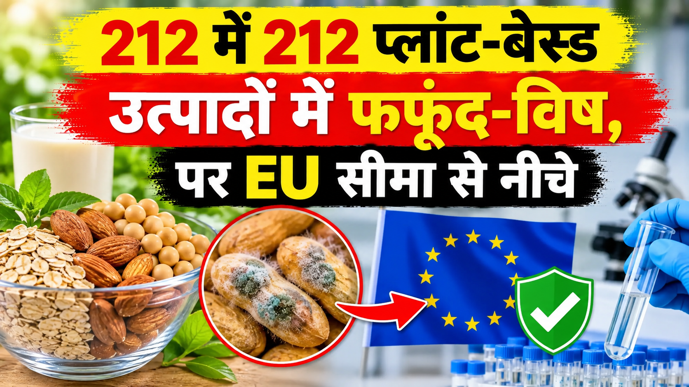
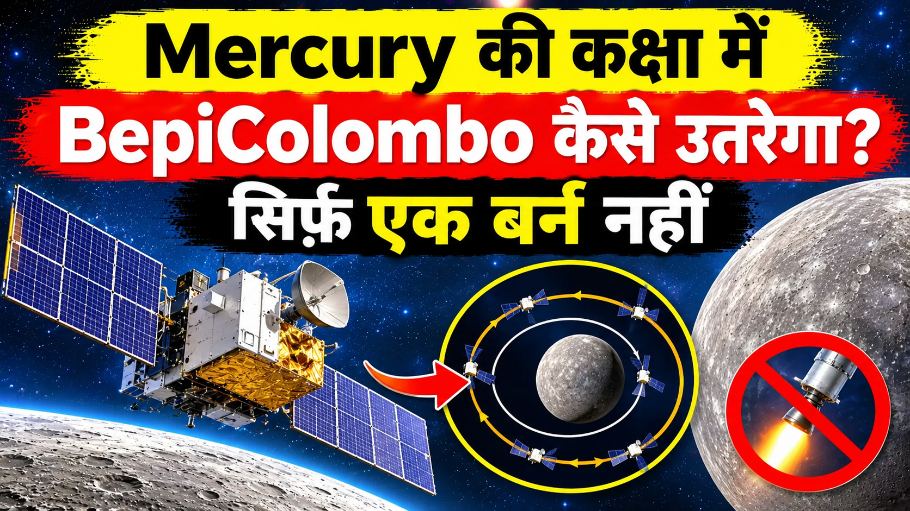
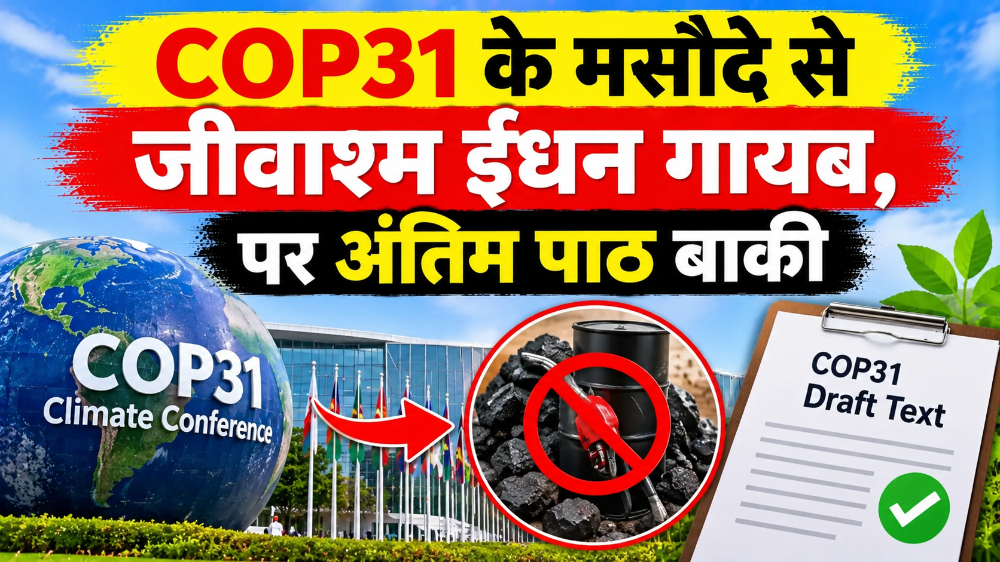

TECH RWT Discovery: Science और Technology आसान हिंदी में
TECH RWT Discovery पर विज्ञान और तकनीक की खबरें और गहरी पड़तालें आसान हिंदी में मिलती हैं. हर लेख के अंत में स्रोत दिए जाते हैं और कठिन शब्द सरल भाषा में समझाए जाते हैं. ताज़ा लेख नीचे देखिए, या सीधे किसी विषय पर जाइए: विज्ञान की खबरें, अंतरिक्ष और ISRO के लेख, टेक्नोलॉजी और Future Tech, पर्यावरण की रिपोर्ट और भारतीय इनोवेशन. पूरी सूची के लिए सभी लेख देखिए.

नवीनतम प्रकाशन (Latest Articles)

Nature के नए अध्ययन में AML का पहला उत्परिवर्तन दो-तिहाई मामलों में 20 की उम्र से पहले मिला. 2018 के अध्ययन से तुलना, सीमाएँ और भारत के लिए मतलब, एक जगह.
पूरा लेख पढ़ें →
BepiColombo 21 नवंबर 2026 को Mercury की कक्षा में पहुंचा, पर ESA के अनुसार सॉफ़्टवेयर गड़बड़ी से बर्न करीब 77% पर रुका. कक्षा, मंगलयान से तुलना और आगे की तारीख़ें.
पूरा लेख पढ़ें →
12-17 नवंबर 2026 के आठ अमेरिकी आउटेज को AI-पैच से जोड़ने वाली कहानी कितनी पक्की है? Microsoft की रिपोर्ट, घटनाओं की तालिका और भारत में 12 घंटे बनाम 90 दिन का हिसाब.
पूरा लेख पढ़ें →
COP31 22 नवंबर 2026 को Antalya Pact के बिना खत्म हुआ, पर जस्ट ट्रांज़िशन और अनुकूलन पर अलग फ़ैसले पास हुए. क्या गिरा, क्या बचा और भारत के वित्त-आंकड़ों पर असर, तालिका में.
पूरा लेख पढ़ें →Voltas और Atomberg का 50:50 कंप्रेसर JV 19 नवंबर 2026 को हुआ, हर पक्ष ₹100 करोड़ तक देगा. तीन भ्रम, आयात-छूट की तालिका, 2028 की समय-सीमा और भारत के लिए मतलब, एक जगह.
पूरा लेख पढ़ें →
CAQM ने 17 नवंबर 2026 को दिल्ली-NCR से GRAP-III हटाया, जब दैनिक AQI 204 रहा. 382 पर लगी रोक क्यों हटी, क्या चालू है और हवा का हाल, तारीख़ों की तालिका और NCR के शहरों के आंकड़ों के साथ.
पूरा लेख पढ़ें →SatSure को Antariksh Venture Capital Fund से ₹60 करोड़ मिले, ₹870 करोड़ के मूल्यांकन पर. यह अनुदान नहीं, निवेश है. राउंड की बनावट, पेलोड का चरण और जो बाकी है, एक जगह.
पूरा लेख पढ़ें →
CCPI 2027 में भारत 28वें स्थान पर है, जबकि Climate Risk Index 2027 में 10वें पर. एक सूची कार्रवाई आंकती है, दूसरी बीती मार. दोनों का हिसाब तालिका और छह सवालों में.
पूरा लेख पढ़ें →
ब्रिटेन के 212 प्लांट-बेस्ड उत्पादों में हर एक में फफूंद-विष मिला, पर मात्रा EU की सुझाई सीमा से नीचे रही. तीन आम भ्रम, FSSAI की सीमाएँ और भारत के लिए मतलब.
पूरा लेख पढ़ें →Bitdefender के अनुसार GhostMap में बिना खोला, बिना permission वाला ऐप Android 10+ फ़ोन को क्रैश-लूप में डालता है. Google ने मामला दोबारा खोला, रेटिंग High; 2016 से तुलना.
पूरा लेख पढ़ें →
BepiColombo की Mercury-कक्षा में कैप्चर ESA की योजना में 21 नवंबर 2026 को है. MESSENGER के एक 15 मिनट के बर्न से यह कैसे अलग है, चार पड़ावों में, तारीख़ों की तालिका और भारत के लिए मतलब के साथ.
पूरा लेख पढ़ें →
COP31 के दूसरे मसौदे से जीवाश्म ईंधन का ज़िक्र हटा और $120 अरब का अनुकूलन-वित्त आँकड़ा भी. दुबई 2023 से तुलना, दोनों मसौदों की तालिका और भारत के लिए मतलब.
पूरा लेख पढ़ें →